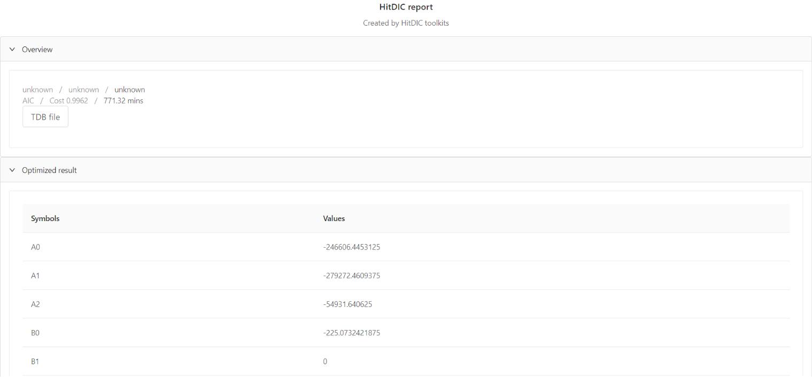
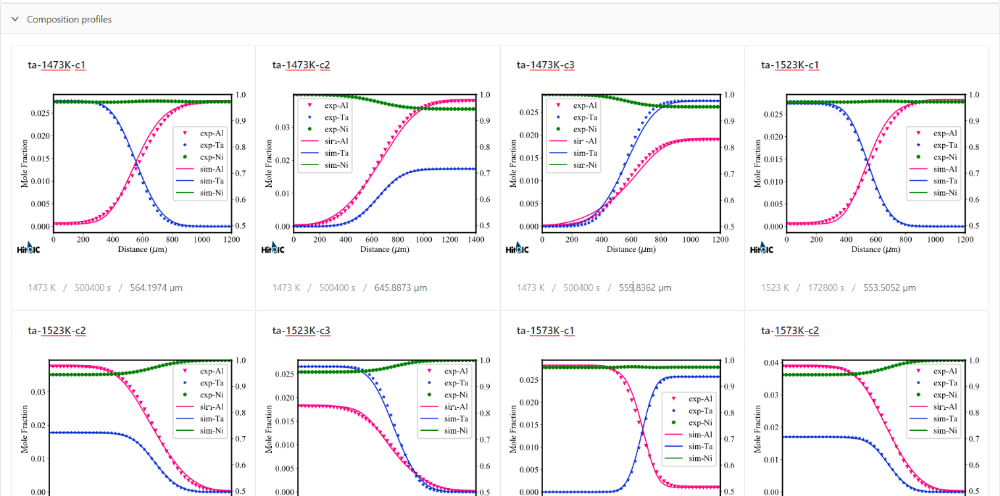

<div class="container image" style="background-color:transparent !important; clear:both; padding-top: 20px !important; padding-bottom: 0px !important;">
  <div class="heading-section" fxLayout="column" fxLayoutAlign="center center">
    <div [class.animated]="isHeading" [class.fadeInLeft]="isHeading">
      <h1 [ngStyle.xs]="{'font-size': '32px'}" [ngStyle.sm]="{'font-size': '42px'}">HitDIC 2 | Automated</h1>
    </div>
    <div [class.animated]="isSubheading" [class.fadeInRight]="isSubheading">
      <h2 [ngStyle.xs]="{'font-size': '18px'}" [ngStyle.sm]="{'font-size': '22px'}">Powered by Prof. Lijun's Group from Central South University</h2>
    </div>
    <div fxLayout="row" [class.animated]="isHeadingBtn" [class.fadeIn]="isHeadingBtn"
      [class.heading-btn]="isHeadingBtn">
      <a class="heading-button-left" mat-flat-button color="accent" routerLink="/projects">Get Started</a>
    </div>

  </div>
</div>

<div fxLayout="row">
  <mat-grid-list cols="2" rowHeight="2:1">
    <mat-grid-tile>
        
    </mat-grid-tile>
    <mat-grid-tile></mat-grid-tile>
    <mat-grid-tile>3</mat-grid-tile>
    <mat-grid-tile>4</mat-grid-tile>
  </mat-grid-list>

  
</div>